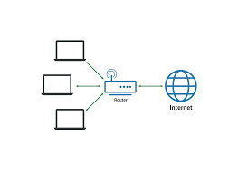

Red de área local
12 de Mayo 2024 por Gabriela Cortes
Una red de área local o LAN (por las siglas en inglés local area network) es una red de computadoras que permite la comunicación y el intercambio de datos entre diferentes dispositivos a nivel local, ya que está limitada a distancias cortas. Por esta razón, esta red se utiliza para hogares privados, tales como una casa o un apartamento, y en empresas
La define la estructura de una red. Una parte de la definición topológica es la topología física, que es la disposición real de los cables o medios. La otra parte es la topología lógica, que define la forma en que los hosts acceden a los medios para enviar datos.
Topologías físicas

Una topología de bus usa solo un cable backbone que debe terminarse en ambos extremos. Todos los host se conectan directamente a este backbone. Su funcionamiento es simple y es muy fácil de instalar, pero es muy sensible a problemas de tráfico, y un fallo o una rotura en el cable interrumpe todas las transmisiones. Esto hace que se dificulte el mantenimiento de la red.
La topología de anillo conecta los nodos punto a punto, formando un anillo físico y consiste en conectar varios nodos a una red que tiene una serie de repetidores. Cuando un nodo transmite información a otro la información pasa por cada repetidor hasta llegar al nodo deseado. El problema principal de esta topología es que los repetidores son unidireccionales (siempre van en el mismo sentido). Después de pasar los datos enviados a otro nodo por dicho nodo, continua cirar de nuevo al nodo de origen, donde es eliminado. Esta topología no tiene problemas por la congestión de tráfico, pero si hay una rotura de un enlace, se produciría un fallo general en la red.
La topología en estrella conecta todos los nodos con un nodo central. El nodo central conecta directamente con los nodos, enviándoles la información del nodo de origen, constituyendo una red punto a punto. Si falla un nodo, la red sigue funcionando, excepto si falla el nodo central, que las transmisiones quedan interrumpidas.
Una topología en estrella extendida conecta estrellas individuales entre sí mediante la conexión de concentradores (hubs) o switches. Esta topología puede extender el alcance y la cobertura de la red.
Una topología jerárquica es similar a una estrella extendida. Pero en lugar de conectar los hubs o switches entre sí, el sistema se conecta con un computador que controla el tráfico de la topología.
La topología de malla se implementa para proporcionar la mayor protección posible para evitar una interrupción del servicio. El uso de una topología de malla en los sistemas de control en red de una planta nuclear sería un ejemplo excelente. En esta topología, cada host tiene sus propias conexiones con los demás hosts. Aunque Internet cuenta con múltiples rutas hacia cualquier ubicación, no adopta la topología de malla completa.
La topología de árbol tiene varias terminales conectadas de forma que la red se ramifica desde un servidor base. Un fallo o rotura en el cable interrumpe las transmisiones.
La topología de doble anillo es una de las tres principales topologías. Las estaciones están unidas una con otra formando un círculo por medio de un cable común. Las señales circulan en un solo sentido alrededor del círculo, regresándose en cada nodo. El doble anillo es una variación del anillo que se utiliza principalmente en redes de fibra como FDDI.
La topología mixta es aquella en la que se aplica una mezcla entre alguna de las otras topologías: bus, estrella o anillo. Principalmente las podemos encontrar dos topologías mixtas: Estrella-Bus y Estrella-Anillo. Los cables más utilizados son el cable de par trenzado, el cable coaxial y la fibra óptica.
Topologías lógicas
La topología broadcast simplemente significa que cada host envía sus datos hacia todos los demás hosts del medio de red. No existe un orden que las estaciones deban seguir para utilizar la red. Es por orden de llegada, es como funciona Ethernet.
La topología transmisión de tokens controla el acceso a la red mediante la transmisión de un token electrónico a cada host de forma secuencial. Cuando un host recibe el token, ese host puede enviar datos a través de la red. Si el host no tiene ningún dato para enviar, transmite el token al siguiente host y el proceso se vuelve a repetir. Dos ejemplos de redes que utilizan la transmisión de tokens son Token Ring y la interfaz de datos distribuida por fibra (FDDI). Arcnet es una variación de Token Ring y FDDI. Arcnet es la transmisión de tokens en una topología de bus.
Tipos
La oferta de redes de área local es muy amplia, existiendo soluciones casi para cualquier circunstancia. Podemos seleccionar el tipo de cable, la topología e incluso el tipo de transmisión que más se adapte a nuestras necesidades. Sin embargo, de toda esta oferta las soluciones más extendidas son tres: Ethernet, Token Ring y Arcnet.
Comparativa de los tipos de redes
Para elegir el tipo de red que más se adapte a nuestras pretensiones, tenemos que tener en cuenta distintos factores, como son el número de estaciones, distancia máxima entre ellas, dificultad del cableado, necesidades de velocidad de respuesta o de enviar otras informaciones aparte de los datos de la red y, como no, el costo.
Como referencia para los parámetros anteriores, podemos realizar una comparación de los tres tipos de redes comentados anteriormente. Para ello, supongamos que el tipo Ethernet y Arcnet se instalan con cable coaxial y Token Ring con par trenzado apantallado. En cuanto a las facilidades de instalación, Arcnet resulta ser la más fácil de instalar debido a su topología. Ethernet y Token Ring necesitan de mayor reflexión antes de proceder con su implementación.
En cuanto a la velocidad, Ethernet es la más rápida, entre 10 y 100 Mbit/s, Arcnet funciona a 2,5 Mbit/s y Token Ring a 4 Mbit/s. Actualmente existe una versión de Token Ring a 16 Mbit/s, pero necesita un tipo de cableado más caro.
En cuanto al precio, Arcnet es la que ofrece un menor costo; por un lado porque las tarjetas que se instalan en los PC para este tipo de redes son más baratas, y por otro, porque el cableado es más accesible. Token Ring resulta ser la que tiene un precio más elevado, porque, aunque las placas de los PC son más baratas que las de la red Ethernet, sin embargo su cableado resulta ser caro, entre otras cosas porque se precisa de una MAU por cada grupo de ocho usuarios más.
Componentes
Servidor: el servidor es aquel o aquellas computadoras que van a compartir sus recursos hardware y software con los demás equipos de la red
Estación de trabajo: las computadoras que toman el papel de estaciones de trabajo aprovechan o tienen a su disposición los recursos que ofrece la red así como los servicios que proporcionan los Servidores a los cuales pueden acceder.
Gateways o pasarelas: es un hardware y software que permite las comunicaciones entre la red local y grandes computadoras (mainframes). El gateway adapta los protocolos de comunicación del mainframe (X25, SNA, etcétera) a los de la red, y viceversa.
[[Puente de red|Bridges o puentes de red]]: es un hardware y software que permite que se conecten dos redes locales entre sí. Un puente interno es el que se instala en un servidor de la red, y un puente externo es el que se hace sobre una estación de trabajo de la misma red. Los puentes también pueden ser locales o remotos. Los puentes locales son los que conectan a redes de un mismo edificio, usando tanto conexiones internas como externas. Los puentes remotos conectan redes distintas entre sí, llevando a cabo la conexión a través de redes públicas, como la red telefónica, RDSI o red de conmutación de paquetes.
Tarjeta de red: también se denominan NIC (Network Interface Card). Básicamente realiza la función de intermediario entre la computadora y la red de comunicación. En ella se encuentran grabados los protocolos de comunicación de la red. La comunicación con la computadora se realiza normalmente a través de las ranuras de expansión que este dispone, ya sea ISA, PCI o PCMCIA. Aunque algunos equipos disponen de este adaptador integrado directamente en la placa base.
El medio: constituido por el cableado y los conectores que enlazan los componentes de la red. Los medios físicos más utilizados son el cable de par trenzado, cable coaxial y la fibra óptica (cada vez en más uso esta última).
Concentradores de cableado: una LAN en bus usa solamente tarjetas de red en las estaciones y cableado coaxial para interconectarlas, además de los conectores, sin embargo este método complica el mantenimiento de la red ya que si falla alguna conexión toda la red deja de funcionar. Para impedir estos problemas las redes de área local usan concentradores de cableado para realizar las conexiones de las estaciones, en vez de distribuir las conexiones el concentrador las centraliza en un único dispositivo manteniendo indicadores luminosos de su estado e impidiendo que una de ellas pueda hacer fallar toda la red. Existen dos tipos de concentradores de cableado:
1.-Concentradores pasivos: actúan como un simple concentrador cuya función principal consiste en interconectar toda la red.
2.-Concentradores activos: además de su función básica de concentrador también amplifican y regeneran las señales recibidas antes de ser enviadas y ejecutadas.
Los concentradores de cableado tienen dos tipos de conexiones: para las estaciones y para unirse a otros concentradores y así aumentar el tamaño de la red. Los concentradores de cableado se clasifican dependiendo de la manera en que internamente realizan las conexiones y distribuyen los mensajes. A esta característica se le llama topología lógica. Existen dos tipos principales:
1.- con topología lógica en bus (HUB): estos dispositivos hacen que la red se comporte como un bus enviando las señales que les llegan por todas las salidas conectadas.
2.-Concentradores con topología lógica en anillo (MAU): se comportan como si la red fuera un anillo enviando la señal que les llega por un puerto al siguiente.